Objectives
Inheritance is a powerful concept employed in object-oriented programming that facilitates solutions to a wide variety of problems. A class may inherit from another class and in doing so gain access to much of the behaviour of that other class. The class inherited from is referred to as the base class or parent. The inheriting class is referred to as the subclass. Some or all of the base class behaviour may be used by the subclass and some base class behaviour may be overridden (redefined) by the subclass. Also, typically, the base class introduces new fields and methods.
Here we refactor the BlueJ shape project encountered in an earlier lab by creating an inheritance hierarchy. We create a base Shape class from which we inherit the other shape classes such as Circle, Triangle and so on. Polymorphism is used to display a cascade of different shapes.
Setup
Create working folder
- Make a new working BlueJ folder called session11 located in labs
- workspaceBlueJ/labs/session11
- This structure is depicted in Figure 1 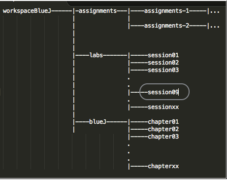
Download archive
- Download the archive shapes.zip available here and expand into the folder session11.
- Your folder and files should be asshown in Figure 2 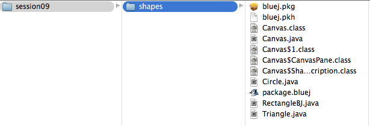
Rectangle
Open the RectangleBJ class in the editor.
Rename RectangleBJ
We chose the rather cumbersome name RectangleBJ to avoid a name clash with a Rectangle class already present in legacy code.
- Recall that we created RectangleBJ by refactoring a copy of the Square class supplied by BlueJ:
- Comment out the statement import java.awt.\;* located towards the top of the file.
- Press the Compile button.
- A compile time error is triggered as illustrated in Figure 1. 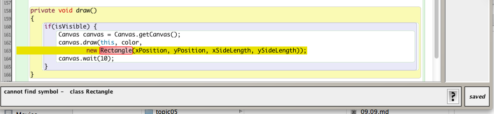
- We can solve this by adding package information (java.awt) to the Rectangle constructor. The method draw() now becomes:
private void draw()
{
if(isVisible) {
Canvas canvas = Canvas.getCanvas();
canvas.draw(this, color,
new java.awt.Rectangle(xPosition, yPosition, xSideLength, ySideLength));
canvas.wait(10);
}
}- Check the code now compiles successfully.
- This expression java.awt.Rectangle essentially states that the class is Rectangle and it is located in the package java.awt.
- A package is, in fact, a folder structure and in this case there exists in the Java installation a folder java within which is present a sub-folder awt within which is located the class Rectangle.
- We are now free to change the name of RectangleBJ to Rectangle without risk of name clash.
- Make this change to the three occurrences (the class name and two constructors) and recompile the file:
- Observe that by making these class name changes the name in the class diagram has also changed as may be seen in Figure 2. 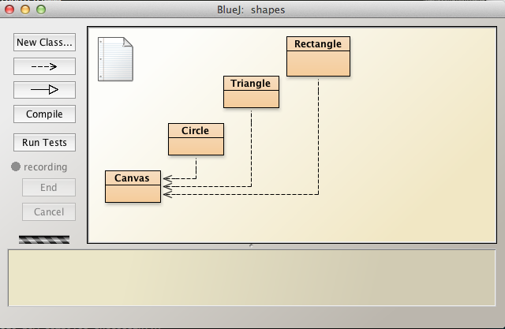
- This expression java.awt.Rectangle essentially states that the class is Rectangle and it is located in the package java.awt.
In the next step we shall commence refactoring the package by introducing an inheritance hierarchy.
Shapes superclass
We shall now create a superclass called Shapes and derive the other shape classes in the package from this new superclass.
- The existing shape classes are Triangle, Rectangle and Circle.
- We shall not make changes to Canvas
Create a new class named Shapes in the BlueJ: inheritance [shapes] package and delete all but the class wrapper:
public class Shapes
{
}Modify the Triangle class by adding extends Shapes as shown in Figure 1 and compile the package. 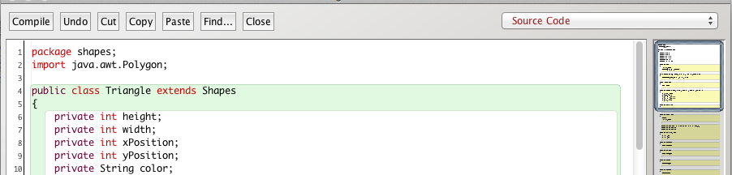
Observe the change that occurs to the class diagrams: an arrow now leads from Triangle to Shapes (Figure 2):
- This means Triangle is derived from, or is a subclass of, Shapes.
- Which is the same as stating that Shapes is a parent or superclass of Triangle. 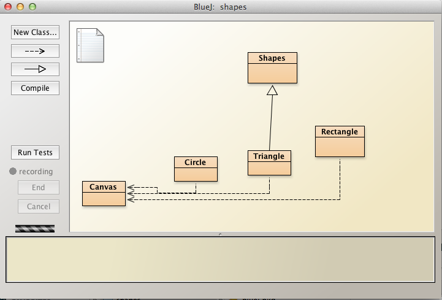
Next we migrate some fields from Triangle to Shapes
- Triangle's fields are shown in Figure 3. height and width are relevant to a triangle but the remaining fields could apply to any shape:
- We will, therefore, migrate all but these two fields to Shapes. 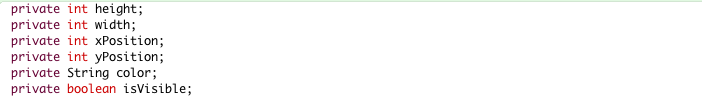
Delete the 4 fields in question from Triangle and locate them in Shapes. The resulting Shapes and Triangle classes become:
public class Shapes
{
private int xPosition;
private int yPosition;
private String color;
private boolean isVisible;
}import java.awt.Polygon;
public class Triangle extends Shapes
{
private int height;
private int width;
...
...
//remaining code follows here:
}Obviously only the relevant changed parts of the Triangle class are shown.
Attempt a compilation: it will fail as shown shown in Figure 4 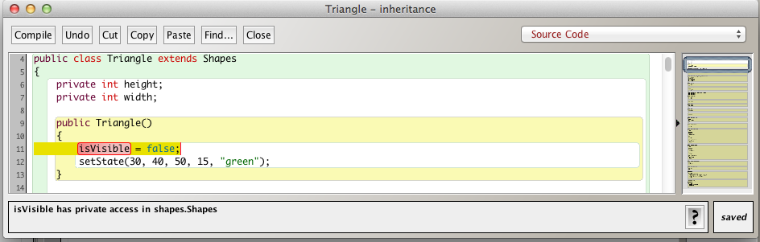 The reason for the compilation failure is that the fields in Shapes are private and so not visible outside the class, not even within subclasses.
- We can solve the problem in one of three ways:
- Make the Shapes fields public
- Create accessors for the Shapes fields
- Make the Shapes fields package-private.
- We shall adopt the third option:
- remove the private access modifiers from the fields resulting in the following code:
public class Shapes
{
int xPosition;
int yPosition;
String color;
boolean isVisible;
}You should now succeed in compiling the package.
Test by instantiating the default Triangle class and invoking makeVisible:
- The triangle should be displayed (as shown in Figure 5). 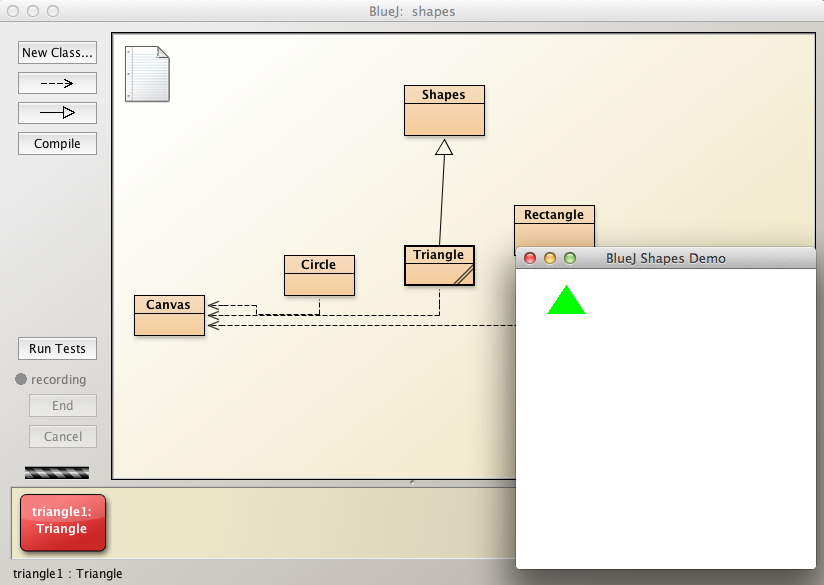
We shall now add an overloaded constructor to Shapes:
public Shapes(int xPosition, int yPosition, String color, boolean isVisible)
{
this.xPosition = xPosition;
this.yPosition = yPosition;
this.color = color;
this.isVisible = isVisible;
}Press Compile button.
- Shapes compiles ok.
- Triangle fails to compile.
- From Figure 6 we see that there is problem related to the constructors in Shapes and Triangle
- Question: Why Shapes you may ask? Does not Shapes compile without any problems?
- Answer: Because a Triangle object is also a Shape object because of the inheritance relationship.
- The newly added Shapes constructor must be invoked from within the subclass Triangle.
- This can be done by using the super keyword as shown in the following refactored code: 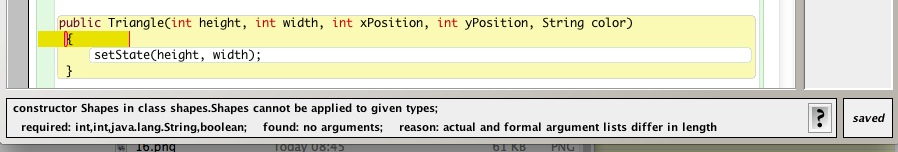 ~~~ import java.awt.Polygon;
public class Triangle extends Shapes { private int height; private int width;
public Triangle()
{
// This is the Shapes constructor:
// Shapes(int xPosition, int yPosition, String color, boolean isVisible)
// super(...) is equivalent to Shapes(...)
// The parameters in super(...) and Shapes(...) must correspond.
super(50, 15, "green", true);
// setState parameters are used to initialized Triange fields.
setState(50, 15);
}public Triangle(int height, int width, int xPosition, int yPosition, String color) { super(xPosition, yPosition, color, true); this.height = height; this.width = width; }
public void setState(int height, int width)
{
this.height = height;
this.width = width;
}
...
...
//remaining code follows here:} ~~~
In the above refactored code
- the fields in the derived class are initialized through a modified setState.
- the superclass fields are initialized by invoking super whose argument values are passed through to the superclass constructor and hence used to initialize the superclass fields.
Subclass Triangle
We shall now examine all the remaining methods in Triangle with a view to determining the optimum location:
- In the derived class Triangle
- Or in the superclass Shapes
Remember, from the slide presentation, that the methods can be summarized as follows:
[1] Those that will apply to all possible subclasses, not just Triangle, Rectangle and Circle but other classes in the shape family not yet considered.
[2] Methods that work okay in the superclass but that the developer may wish to override in a specific subclass or number of subclasses
[3] Methods that will be implemented only in the subclasses because of unique properties of each class.
Category [1] methods
A study of the methods in Triangle suggests the following required for all possible subclasses whose primary property is geometric shape:
- makeVisible
- makeInvisible
- moveTo
- moveHorizontal
- moveVertical
- moveRight
- moveLeft
- moveUp
- moveDown
- changeColor
- erase
Category [2] methods
There does not appear, at this stage of development, to be any methods that are implemented in the superclass but that one might wish to override in a specific derived class.
Category [3] methods
Two methods fall into this category:
- draw
- changeSize
The method draw is specific to each type because, for example, the geometry of a triangle is very different from the geometry of a circle.
- We can arrange that draw in each shape class is invoked by refactoring as follows:
- Remove the access modifier private from draw. The header now becomes: void draw()
- Make the superclass abstract by placing the abstract keyword before the word class as follows:
- abstract public class Shapes
- An abstract class cannot be instantiated
- We can, however, use a variable of an abstract class type as a reference to an object (such as Triangle).
- abstract public class Shapes
- Place the following statement in the Shapes class following the constructor:
- abstract void draw();
- An abstract method is only declared: it is implemented in each subclass.
- Declaring draw as abstract in the superclass requires the implementation of the method in all subclasses of Shapes.
- abstract void draw();
The second method falling into this category is changeSize.
- Declare an abstract method in the superclass
- abstract void changeSize(int scale)
- Implement in subclass(es).
The completed Shapes class is as follows:
/**
* An abstract class describing geometric shapes
*
* @author Michael Kolling and David J. Barnes
* @version 2006.03.30
*
* @author jfitzgerald
* @version 2014-05-23
*/
public abstract class Shapes
{
int xPosition;
int yPosition;
String color;
boolean isVisible;
public Shapes(int xPosition, int yPosition, String color, boolean isVisible)
{
this.xPosition = xPosition;
this.yPosition = yPosition;
this.color = color;
this.isVisible = isVisible;
}
abstract void draw();
abstract void changeSize(int scale);
public void makeVisible()
{
isVisible = true;
draw();
}
public void makeInvisible()
{
erase();
isVisible = false;
}
public void moveTo(int x, int y)
{
xPosition = x;
yPosition = y;
makeVisible();
}
public void moveRight()
{
moveHorizontal(20);
}
public void moveLeft()
{
moveHorizontal(-20);
}
public void moveUp()
{
moveVertical(-20);
}
public void moveDown()
{
moveVertical(20);
}
public void moveHorizontal(int distance)
{
erase();
xPosition += distance;
draw();
}
public void moveVertical(int distance)
{
erase();
yPosition += distance;
draw();
}
public void changeColor(String color)
{
this.color = color;
draw();
}
protected void erase()
{
if(isVisible) {
Canvas canvas = Canvas.getCanvas();
canvas.erase(this);
}
}
}Triangle then reduces to:
import java.awt.Polygon;
/**
* A subclass of Shapes describing a regular 2-D Triangle
*
* @author Michael Kolling and David J. Barnes
* @version 2006.03.30
*
* @author jfitzgerald
* @version 2014-05-23
*/
public class Triangle extends Shapes
{
private int height;
private int width;
public Triangle()
{
//super(xPosition, yPosition, color, isVisible)
super(150, 65, "black", true);
this.height = 50;
this.width = 75;
}
public Triangle(int height, int width, int xPosition, int yPosition, String color)
{
//super(xPosition, yPosition, color, isVisible)
super(xPosition, yPosition, color, true);
this.height = height;
this.width = width;
}
public void changeSize(int scale)
{
erase();
height *= scale;
width *= scale;
draw();
}
void draw()
{
if(isVisible) {
Canvas canvas = Canvas.getCanvas();
int[] xpoints = { xPosition, xPosition + (width/2), xPosition - (width/2) };
int[] ypoints = { yPosition, yPosition + height, yPosition + height };
canvas.draw(this, color, new Polygon(xpoints, ypoints, 3));
canvas.wait(10);
}
}
}Henceforth when one wishes to add a new shape class, such as for example Rectangle, Circle or Pentagon, much, if not most, of the code required will already have been written and be available in Shapes, the superclass.
Display Shapes
Create a new class TestShapes in the shapes package.
public class TestShapes
{
}Create a main method in TestShapes:
public static void main(String[] args)
{
}All of the following code is located within main
Create a list of Shapes references in main:
ArrayList<Shapes> shapes = new ArrayList<>();Intialize these references with Triangle objects:
shapes.add(new Triangle(30, 40, 160, 50, "red"));
shapes.add(new Triangle(40, 50, 170, 60, "blue"));
shapes.add(new Triangle(50, 60, 180, 70, "green"));
shapes.add(new Triangle(60, 70, 190, 80, "black"));To understand what the argument values refer to study the Triangle constructor signature (Figure 1):
Add the following code which will display the triangles:
for(Shapes shape : shapes)
{
shape.makeVisible();
}Here is the complete TestShapes class to date:
import java.util.ArrayList;
public class TestShapes
{
public static void main(String[] args)
{
ArrayList<Shapes> shapes = new ArrayList<>();
shapes.add(new Triangle(30, 40, 160, 50, "red"));
shapes.add(new Triangle(40, 50, 170, 60, "blue"));
shapes.add(new Triangle(50, 60, 180, 70, "green"));
shapes.add(new Triangle(60, 70, 190, 80, "black"));
for(Shapes shape : shapes)
{
shape.makeVisible();
}
}
}Select the TestShapes class diagram and execute main (Figure 2).
- Output similar to that displayed in Figure 2 should appear.
- This is an example of polymorphism in action:
- We have assigned each of a set of Triangle objects to a superclass reference, a Shapes type.
- We have then invoked method makeVisible on each Triangle object referenced by a Shapes type reference.
- The method invoked, namely makeVisible, is implemented not in the Shapes class but in the Triangle class
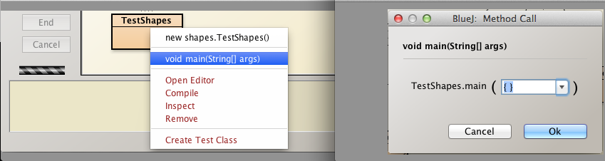
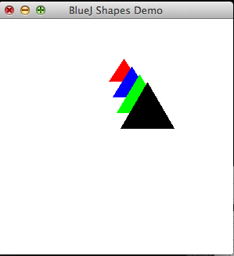
Subclass Circle
We shall now subclass the Circle class.
- Add the extends keyword:
public class Circle extends ShapesAn attempt at compilation fails: see Figure 1. 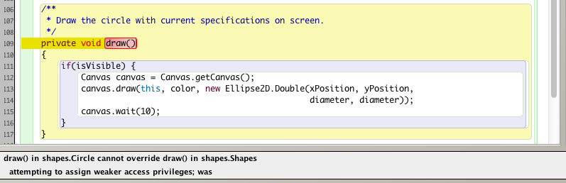
Fix this by removing the private modifier preceeding the method draw.
Attempt to compile again. Again compilation fails: see Figure 2. 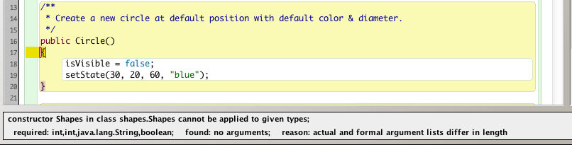
To resolve the latest failure requires taking the following steps:
Delete the Circle fields already in Shapes:
- xPosition
- yPosition
- color
- isVisible
Add a call to super in the Circle constructors:
/** * Create a new circle at default position with default color & diameter. */ public Circle() { super(20, 30, "blue", true); isVisible = false; setState(30); } public Circle (int diameter, int xPosition, int yPosition, String color) { super(xPosition, yPosition, color, true); setState(diameter); }
Modify Circle setState method by removing refererences to the variables no longer in Circle (effectively moved to Shapes superclass)
public void setState(int diameter)
{
this.diameter = diameter;
}Delete all remaining methods except
- draw
- changeSize
These deleted methods are present in the superclass Shapes.
The Circle class should now compile.
Check that it is possible to instantiate and display a Circle object.
Observe that the Circle class diagram is now associated with the Shapes superclass with the arrow as shown in Figure 3.
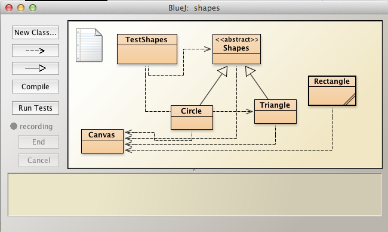
Here is the complete Circle code:
import java.awt.geom.*;
/**
* A circle that can be manipulated and that draws itself on a canvas.
*
* @author Michael Kolling and David J. Barnes
* @version 2006.03.30
*
* @author jfitzgerald
* @version 2014-05-23
*
*/
public class Circle extends Shapes
{
private int diameter;
/**
* Create a new circle at default position with default color & diameter.
*/
public Circle()
{
super(120, 180, "green", true);
this.diameter = 80;
}
public Circle (int diameter, int xPosition, int yPosition, String color)
{
super(xPosition, yPosition, color, true);
this.diameter = diameter;
}
/**
* Change the circle's size by factor 'scale'
*/
public void changeSize(int scale)
{
super.erase();
diameter *= scale;
draw();
}
/**
* Draw the circle with current specifications on screen.
*/
void draw()
{
if(isVisible) {
Canvas canvas = Canvas.getCanvas();
canvas.draw(this, color, new Ellipse2D.Double(xPosition, yPosition,
diameter, diameter));
canvas.wait(10);
}
}
}Display Shapes
Here is the code for the TestShapes class used to create and display an array of Triangle objects.
import java.util.ArrayList;
public class TestShapes
{
public static void main(String[] args)
{
ArrayList<Shapes> shapes = new ArrayList<>();
shapes.add(new Triangle(30, 40, 160, 50, "red"));
shapes.add(new Triangle(40, 50, 170, 60, "blue"));
shapes.add(new Triangle(50, 60, 180, 70, "green"));
shapes.add(new Triangle(60, 70, 190, 80, "black"));
for(Shapes shape : shapes)
{
shape.makeVisible();
}
}
}We shall now modify this to additionally display an array of Circle objects:
shapes.add(new Circle(30, 20, 60, "red"));
shapes.add(new Circle(40, 30, 70, "blue"));
shapes.add(new Circle(50, 40, 80, "green"));
shapes.add(new Circle(60, 50, 90, "black"));No further change is necessary: the same code block will display all the shapes, both Triangle and Circle types, as for Triangle types alone:
for(Shapes shape : shapes)
{
shape.makeVisible();
}- Note that the same type Shapes is used to reference two types of objects, Triangle and Circle
- This, again, is an example of polymorphism in action.
- You will be asked to add different shapes, such as Rectangle, to the ArrayList
in the Exercise section.
Here is the complete TestShapes class to date:
import java.util.ArrayList;
public class TestShapes
{
public static void main(String[] args)
{
ArrayList<Shapes> shapes = new ArrayList<>();
shapes.add(new Circle(30, 20, 60, "red"));
shapes.add(new Circle(40, 30, 70, "blue"));
shapes.add(new Circle(50, 40, 80, "green"));
shapes.add(new Circle(60, 50, 90, "black"));
shapes.add(new Triangle(30, 40, 160, 50, "red"));
shapes.add(new Triangle(40, 50, 170, 60, "blue"));
shapes.add(new Triangle(50, 60, 180, 70, "green"));
shapes.add(new Triangle(60, 70, 190, 80, "black"));
for(Shapes shape : shapes)
{
shape.makeVisible();
}
}
}Execute main on TestShapes. The output should be as shown in Figure 1. 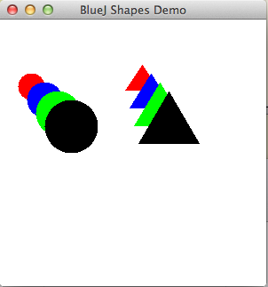
Exercises
Exercise 1
Refactor the Rectangle class in the shapes package as follows:
- Adopt a similar approach to that employed in the cases of Circle and Triangle.
- Extend the class from Shapes
- Delete fields from Rectangle that are already in Shapes.
- Do not change the fields in Shapes.
- Do not add or delete fields in Shapes.
- The erase class is applicable to all subclasses and so can reside in the superclass.
- It is therefore not necessary to override it in the subclass.
- Add a call to super in both Rectangle constructors.
- Modify the setState method by eliminating all parameters representing fields migrated to the superclass.
- Test by instantiating and rendering
- a default Rectangle object (Figure 1),
- a Rectangle object using the overloaded constructor.

Exercise 2
Refactor the TestShapes class as follows:
- Instantiate 4 Rectangle objects
- Choose arguments so that the Rectangle objects display in a cascade style
- Ensure the objects do not impinge on the Triangle and Circle objects
- Aim for a display similar to Figure 2.

Exercise 3
Develop a class Pentagon.
Figure 3 depicts a pentagon and its circumscribing circle.

In this exercise origin of the pentagon is the centre of the circumscribing circle.
- For example the invoking the method moveTo(int x, int y) with (x, y) == (0, 0) results in output shown in Figure 4.

Use Shapes as a superclass.
Following is skeleton code for the class:
import java.awt.Polygon;
/**
* @file Pentagon.java
* @brief This class describes a pentagon and has behaviour to display, resize and move objects
*
* @author jfitzgerald 2014-05-23
*
*/
public class Pentagon
{
private int radius;//radius of circumscribing circle
public Pentagon()
{
super(...);
this.radius = 50;
}
public Pentagon(int radius, int xPosition, int yPosition, String color)
{
super(...);
...
}
public void changeSize(int scale)
{
...
...
...
}
void draw()
{
if(isVisible) {
//Ref: http://mathworld.wolfram.com/Pentagon.html
double dc1 = 0.25*(Math.sqrt(5) - 1);
double dc2 = 0.25*(Math.sqrt(5) + 1);
double ds1 = 0.25*(Math.sqrt(10 + 2*Math.sqrt(5)));
double ds2 = 0.25*(Math.sqrt(10 - 2*Math.sqrt(5)));//length of pentagon side is 2*ds2
int c1 = -(int)(radius*dc1);//radius of circle that circumscribes pentagon
int c2 = -(int)(radius*dc2);
int s1 = (int)(radius*ds1);
int s2 = (int)(radius*ds2);
Canvas canvas = Canvas.getCanvas();
int[] xpoints = { xPosition,
xPosition + s1,
xPosition + s2,
xPosition - s2,
xPosition - s1
};
int[] ypoints = { yPosition - radius,
yPosition + c1,
yPosition - c2,
yPosition - c2,
yPosition + c1
};
canvas.draw(this, color, new Polygon(xpoints, ypoints, 5));
canvas.wait(10);
}
}
}Write a class TestPentagon to display a series of Pentagon objects as depicted in Figure 5.

Here is the TestPentagon skeleton:
public class TestPentagon
{
public static void main(String[] args)
{
ArrayList<Shapes> shapes = new ArrayList<>();
shapes.add(new Pentagon(30, 60, 30, "red"));
shapes.add(new Pentagon(... "blue"));
shapes.add(new Pentagon(... "green"));
shapes.add(new Pentagon(... "black"));
for(Shapes shape : shapes)
{
...
}
}
}Exercise 4
Change the inheritance hierarchy of shapes to that shown in Figure 6:
- Create an Ellipse class
- Derive Ellipse directly from Shapes
- Change Circle so that it is derived directly from Ellipse.